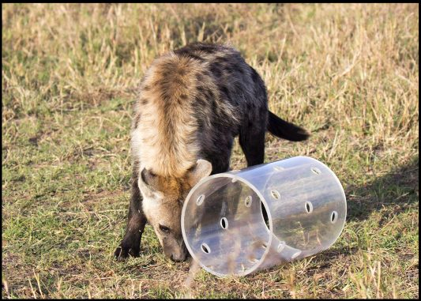
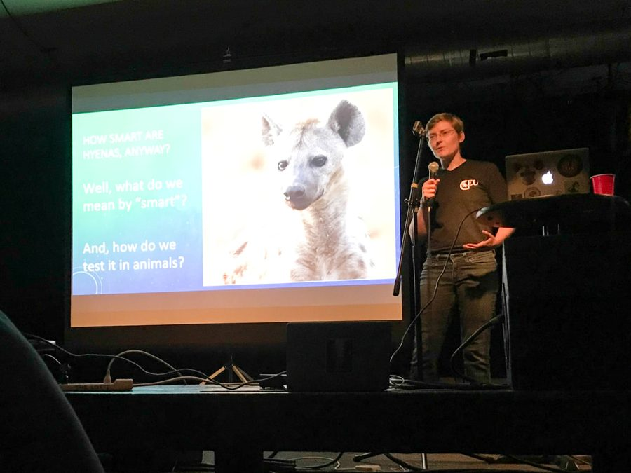
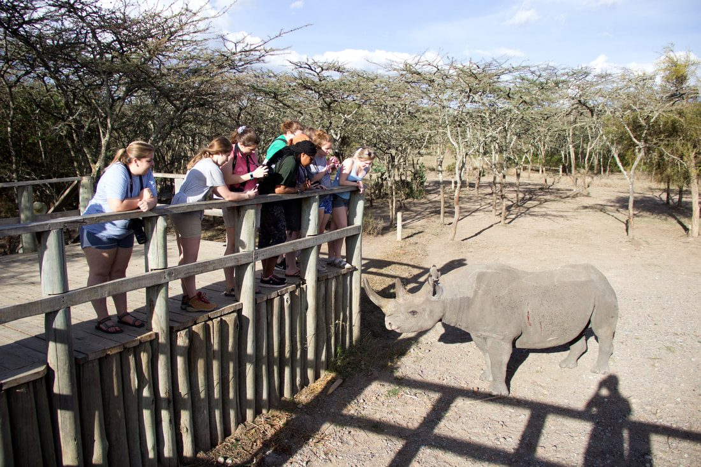

Research matters most when it reaches people. We share what we learn about animal minds with students, schools, zoos, and the public — and we work to make science a place where everyone belongs.

Rethinking the hyena
Spotted hyenas are often cast as cowardly, dim-witted scavengers. The reality is very different: they live in complex, female-led societies, kill most of their own food, are devoted mothers, and are skilled problem-solvers. Our research on hyena innovation and self-control adds to the evidence that these are some of the most socially and cognitively sophisticated carnivores in Africa.
We help set the record straight wherever we can — fact-checking hyena graphics for National Geographic, sharing cognition research with zoo audiences, illustrating educational pamphlets, and writing for the public. See more in News and ArtScience.

Sharing animal cognition
Animals solve problems, make decisions, and communicate in ways that surprise most people. We bring that research to non-scientists through public talks, field blogs like Notes from Kenya, media interviews, photography, and illustration.
We have also contributed to Project Biodiversify, which increases the visibility of researchers from underrepresented groups and gives biology teachers ready-to-use materials on new findings.
Invite us! We’re happy to talk with schools, community groups, and nature organizations about hyenas, coyotes, and animal intelligence. Get in touch.

Inclusive science
Classrooms, workplaces, and research are better when they include people from many backgrounds and experiences. In my teaching and mentoring I aim to make sure every student is treated fairly and feels welcome — including students of all races, ethnicities, genders, sexual orientations, socio-economic backgrounds, ages, religions, abilities, and mental health statuses.
In practice, that means a diversity statement in every syllabus, using students’ pronouns, avoiding jargon, acronyms, and culture-specific metaphors, and keeping my classroom and office a safe space.
Land acknowledgements
Hunter College stands on the unceded homelands of the Mohican, Wappinger, and Munsee Lenape peoples, who nurtured relations with these waters and soils for generations before forced displacement. My commitment is to steward this space not just through words but through actions — centering equity in my classroom, challenging systemic harm, and honoring the resilience of Indigenous and marginalized communities whose histories are woven into this place.
The Mara Hyena Project conducts its research in the Maasai Mara of Kenya, on lands traditionally stewarded by the Maasai people, whose livelihoods and cultural identity remain deeply connected to the land and its wildlife. I am grateful for the knowledge, hospitality, and collaboration of Maasai community members and colleagues.